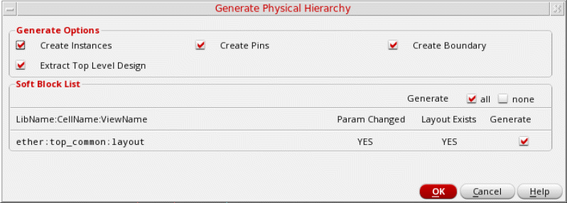
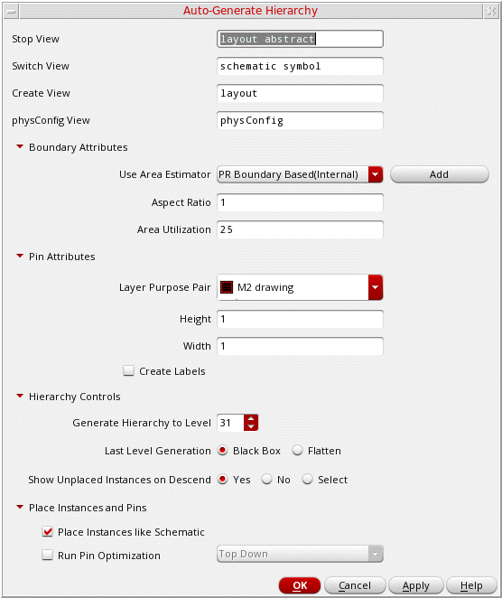
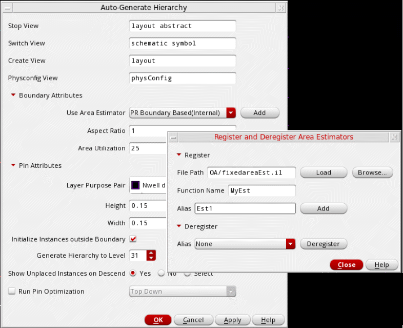

2
Generating a Physical Hierarchy
This chapter covers the following topics:
Physical Hierarchy Generation
The Generate Physical Hierarchy generates the physical hierarchy based on the configuration defined in
By default, Generate Physical Hierarchy looks for layout views and is guided by the configuration you specify in the Logical Switch View List and Physical Stop View List fields in the Global Bindings section of the CPH interface.
You can also specify the attributes, such as boundary, IO pins, and obstructions, for each soft block and soft abstract in the Attributes section of the Soft Block mode. While defining soft blocks in the CPH form, the pin layer will be read from the intIOPinLayer environment variable. Following is the syntax to set the environment variable.
envSetVal("Layout XL", "initIOPinLayer", "string", "METAL3 pin")
For details on the parameters used by the Generate Physical Hierarchy command, refer the
The Generate Physical Hierarchy command allows you to generate the components in the design while maintaining the hierarchy levels defined in the CPH Soft Block mode. To generate the physical hierarchy:
-
Choose Floorplan – Generate Physical Hierarchy. The Generate Physical Hierarchy form is displayed.
 -
(ICADVM20.1 EXL Only) In the Generate Options section, select the objects to be generated when the physical hierarchy is generated. All options are selected by default. Clear the check boxes for the objects that you do not want to generate
- Create Instances: Generates instances in the layout canvas.
- Create Pins: Generates pins below the PR boundary.
- Create Boundary: Generates the PR boundary.
Related Environment Variables: initCreateInstances, initCreatePins and initCreateBoundary -
Select Extract top level design checkbox. In this state, the value from the
extractAfterGenerateAllenvironment variable is honored while opening the GPH form. It allows you to selectively enable or disable the connectivity extraction for top block only and control the extraction for the remaining of the soft block through the environment variable. -
Review the Soft Block List. The tool reads all the soft attributes and checks for the existence of cellviews defined in Configure Physical Hierarchy. The following information is displayed in the Soft Block List section:
-
LibName:CellName:ViewName: Specifies the names of soft blocks defined in Configure Physical Hierarchy. -
Param Changed: Specifies whether the soft block parameters have been updated. -
Layout Exists: Specifies whether a layout exists for the given soft block. -
Generate: Allows you to specify whether or not you want to generate the soft block. The check box is selected by default in the following conditions:- The soft block parameters have changed and a layout exists.
- The soft block parameters has changed but the layout does not exists.
- Neither the soft block parameters have changed nor the layout exists.
The check box is deselected only when the soft block parameters have not changed, but the layout for the soft block exists.
The pin purpose is read from theinitIOPinLayerenvironment variable. Pins are created on this purpose while generating the physical hierarchy. -
- In the Generate option, select all to generate all soft blocks or none to generate none of the soft blocks configured.
- Click OK to generate the physical hierarchy in the layout window.
A summary report of the soft blocks generated by Generate Physical Hierarchy is displayed. The summary report displays a table that lists the source lib:cell:view name, the target lib:cell:view name, the instance name, and the status of whether the soft block has been generated.
After running Generate Physical Hierarchy, the connectivity extractor is not run automatically. To get the opens and shorts marks, run the extractor by choosing Connectivity – Update – Extract – Layout.
After generating the physical hierarchy, for a few soft blocks, a few extra pins may be generated in the layout view. Usually, these are power and ground pins that were not visible in the logical hierarchy of the design. Generate Physical Hierarchy promotes these pins to the top of each soft block while generating their layout views. Use the options in the Edit – Soft Blocks form to update the parameters for these pins. To know more about these options, see
While generating a physical hierarchy using the Generate Physical Hierarchy command, the following environment variables are honored.
- initCreatePins: Generates pins in the layout canvas.
- initCreateInstances: Generates instances in the layout canvas.
-
initCreateBoundary: Generates a PR boundary in the layout canvas.
If the initCreateInstances, initCreatePins, and initCreateBoundary environment variables are all set tonil, then the hierarchy is not generated. Instead, an error message is displayed.
If one or two of these environment variables are set tonil, then the hierarchy is generated. However a warning message is displayed.
Alternatively, use the Create Instances, Create Pins, and Create Boundary check boxes in the Floorplan Global Options form (Layout GXL Options form in IC6.1.8) to specify whether instances, pins, and PR Boundary need to be generated. For more information, see Controlling Re-Generation of Instances, Pins, and PR Boundary. - initGlobalNetPins: Generates layout pins for the global nets in the schematic.
-
initCreatePadPins: Generates pins and pads for schematic pins that are connected to I/O pads (cells of type
pad,padSpacer, orpadAreaIO). - initCreateSnapBoundary: Creates a rectangular snap boundary enclosing the generated PR boundary.
- initCreateMTM: Preserves user-defined bindings.
- initDoStacking: Abuts MOS transistors in a specific order.
- initDoFolding: Divides the prepared transistors into two or more folds.
- extractAfterGenerateAll: Runs connectivity extraction as part of the layout generation command, and lists all incomplete nets in the design after generating the layout.
- initIOPinLayer: Specifies the layer on which pins must be generated.
-
initIOLabelType: Specifies the type of label to be generated for I/O pins. Valid values are:
LabelandText Display. - pinTextSameLayer: Specifies whether the textDisplay or label layer must be the same as pin layer.
- pinTextSamePurpose: Specifies whether the textDisplay or label purpose must be the same as pin layer purpose.
Auto-Generate Hierarchy
(ICADVM20.1 Only) Virtuoso® Floorplanner provides the Auto-Generate Hierarchy functionality, which lets you configure, specify bindings, and generate top blocks and soft blocks in the layout canvas. The Auto-Generate Hierarchy lets you quickly generate a physical hierarchy by applying common parameters. You can define common boundary and pin parameters for the blocks you want to generate. You can specify the shape and size of the boundary that is created when the soft block is generated.
By default, layout view components are generated in the same library as the source schematic library. If the source library is the read-only mode, then the Auto-Generate Hierarchy command fails to generate layout views in the schematic library.
In such a scenario, use schLayLibraryPair to map the read-only schematic library to a different layout library for generation. In the following example, a schematic design library design_sch is mapped to a layout design library design_lay:
envSetVal("layoutXL" "schLayLibraryPair" 'string "((\"design_sch\" \"design_lay\")
In the following example, regular expressions are used to define mappings:
envSetVal("layoutXL" "schLayLibraryPair" 'string "((\"*_sch\" \"*_lay\") (\"*_sch2\" \"*_lay2\") (\"sch_*\" \"lay_*\") (\"lib1_*_sch2\" \"lib1_*_lay2\"))")
To generate a physical hierarchy:
-
Select Floorplan – Auto Generate Hierarchy.
The Auto-Generate Hierarchy form appears.
 - In Stop View, specify the required physical view names to be used to determine the corresponding physical views. When traversing a hierarchy, the tool instantiates blocks using one of the specified stop views. If no matching stop view names are found, a new view is created with the specified Create View field name.
- In Switch View names, specify the names to be used to create a physical view for blocks if the stop views are absent in the hierarchy.
- In Create View, specify the name to be used for the new layout view, which will be created when no matching stop views are found.
- In physconfig View, specify the name of the physical configuration view that provides information about the schematic-layout pairs.
-
Expand Boundary Attributes to display the options in this section. You can use the following methods to define the boundary:
-
The Use Area Estimator option lets you use one of the following area estimator functions:
- PR Boundary Based: Sums up the polygonal area of the individual instances to derive the overall area estimation.
- BBox Based: Sums up the minimum bounding box area of the individual instances to derive the overall area estimation.
- Add: Lets you register your own area estimation functions and use them. For more information, see Registering and De-Registering Area Estimation Functions.
-
In Aspect Ratio, set the width-to-length ratio of the boundary. The default value is
1, which specifies a square boundary. An aspect ratio of.5specifies a boundary twice as high as it is wide. A value of2specifies a boundary twice as wide as it is high. -
In Area Utilization, specify the percentage of area within the boundary that must be filled. The default is
25%.
-
The Use Area Estimator option lets you use one of the following area estimator functions:
-
Expand Pin Attributes to specify the following common settings for all the soft block pins:
- Layer Purpose Pair: Select the LPP on which the pins must be generated.
- Height: Specify the pin height.
- Width: Specify the pin width.
- Create Labels: Specify whether labels are to be generated along with the soft block pins. When this option is selected, the following environment variables are honored:
- Select Initialize Instances Outside Boundary to generate all the instances and pins outside the PR boundary, without any overlap. The placement statuses of the instances are set to none. When the check box is cleared, all instances are placed inside the PR boundary.
- (ICADVM20.1 EXL Only) Expand Hierarchy Controls to define settings for hierarchical instances.
-
Specify a value in Generate Hierarchy to Level to define the level up to which the hierarchy must be generated. The default (maximum) value is
31. - (ICADVM20.1 EXL Only) Set Last Level Generation to one of the following to specify the state in which the last level of hierarchy is to be generated.
-
Set Show Unplaced Instances on Descend to one of the following values to specify whether unplaced instances are to be displayed when you descend into the hierarchy:
- Yes (default): Shows all unplaced instances.
- No: Hides all unplaced instances.
- Select: Displays a popup message each time you descend into a hierarchy. You can specify whether you want to show or hide all unplaced instances.
Environment variable: showUnplacedInstances - (ICADVM20.1 EXL Only) Expand Place Instances and Pins.
- (ICADVM20.1 EXL Only) Select Place Instances like Schematic to place the generated soft block instances inside the PR boundary as in the corresponding schematic view. If not selected, the soft block instances are placed outside the PR boundary.
-
(ICADVM20.1 EXL Only) Select Run Pin Optimization to run Pin Optimizer hierarchically on the generated blocks. You can select one of the following modes to run Pin Optimizer:
-
Top Down: Pin Optimizer is first run on the level-0 and level-1 soft blocks to get the best possible net length. Any existing pins, for example those of any level-1 hard blocks, are recognized and the soft block pins are aligned to these pins.
As the next step, the pin positions of the level-1 soft blocks, determined in the previous step, are used to derive the pin positions inside them. This process continues until the leaf level is reached. -
Bottom Up: Follows the same behavior as described in Top Down, but runs in the opposite direction. Pin Optimizer is first run on pins of the leaf-level layouts that have been realized. The soft block pin positions are then derived.
Environment variables: autoGenHierRunPinOpt, autoGenHierPinOptMode
-
Top Down: Pin Optimizer is first run on the level-0 and level-1 soft blocks to get the best possible net length. Any existing pins, for example those of any level-1 hard blocks, are recognized and the soft block pins are aligned to these pins.
- Click OK.
The generated layout is opened in a new window.
Registering and De-Registering Area Estimation Functions
To register an area estimator function:
-
Click Add beside the Use Area Estimator list.
The Add/Delete Area Estimators form appears.
 - Expand the Register section.
- Specify the File Path of the area estimator file that contains the boundary definitions. Alternatively, click Browse to select the required file and close the window.
- Click Load to load the area estimator function.
- Specify a Function Name and Alias.
- Click Add to register the area estimator function.
- Click Close.
- Select the area estimator function that you registered from the Use Area Estimator list.
- Click Apply to run the area estimator function.
To de-register an area estimator function:
- In the Add/Delete Area Estimators form, select the area estimator function from the Deregister – Alias list.
- Click Deregister.
- Click Close.
Return to top